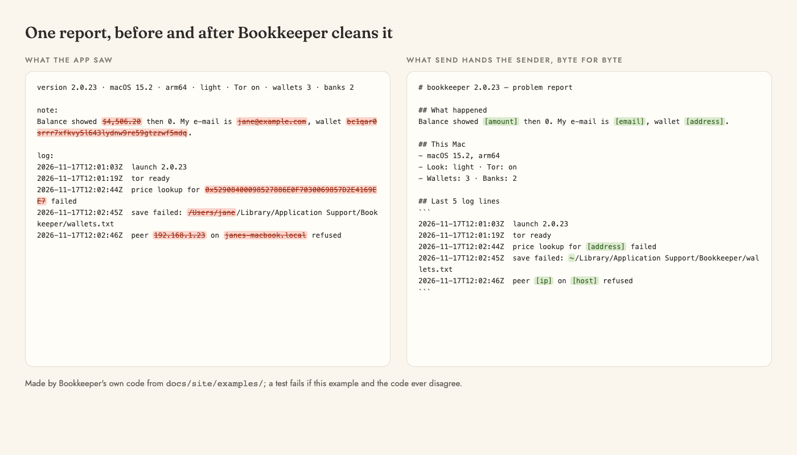

Problem reports
Something wrong, or an idea? Bookkeeper can write the report for you, show you every word of it, and send it only if you say so.
How to report a problem
- Open Settings and choose Send feedback…. If Bookkeeper closed unexpectedly, it offers the same sheet the next time it opens.
- Write what happened under What happened? The report below fills in as you type.
- Read the report. Change or delete anything you like.
- Press Send, or Copy or Save… to pass it on yourself. Cancel sends nothing.
What a report holds
The Bookkeeper and macOS versions, the kind of Mac, the look, whether Tor is on, how many wallets and banks you have (counts only), the last 40 lines of Bookkeeper's own log (if it has written any), and your note.
Before you see it, Bookkeeper takes out home folder names, wallet addresses, amounts, IP addresses, e-mail addresses and the names of your own machines. Bank lines are never put in. Names you type into the note yourself, such as a shop, are yours: the box shows them, and you can delete them before you press Send.
See it for yourself
Below is one report with a private thing of every kind planted in it: a wallet address, a bitcoin address, an amount, an e-mail address, a home folder, an IP address and a machine name. On the left is what the app saw. On the right is what Send hands the sender.

Bookkeeper's own code made both sides. The two files are in the repository, docs/site/examples/report-input.txt and report-sent.txt. A test checks them against the code every time, and fails if either one is out of date.
What you see in the box is exactly what is sent, byte for byte. Nothing is added or changed after you press Send. The sender is house-report, and its source is public: House-of-Helios/xmrange, crates/house-report.
Where it goes
Send seals the report with a key that belongs to Bookkeeper alone, so only its makers can open it. It signs the report with a key made for that one report, and hands it through Tor to four public Nostr relays: nos.lol, relay.primal.net, relay.snort.social and nostr.mom. The relays hold sealed text for 30 days.
There is no account, no e-mail and no server of the House's own, and your IP address is never seen. If Tor is not connected, or no relay takes it, the sheet says so and nothing is sent; Copy and Save… still work.
Send is in version 2.0.23 and later. See Privacy for everything else that leaves the Mac.